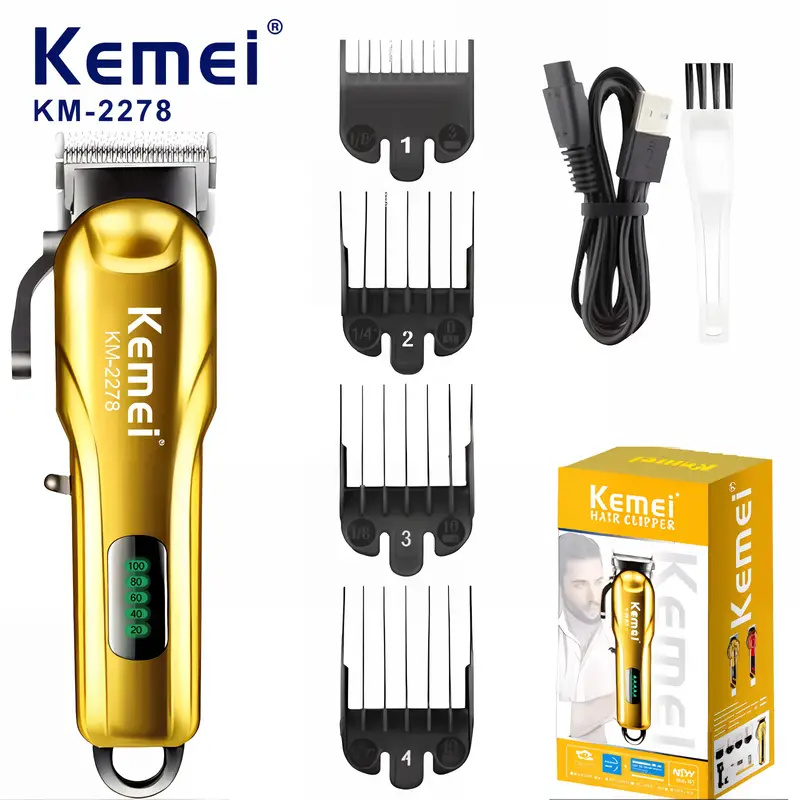

مقص الشعر الكهربائي Kemei KM-2278


مقدمة
مقص الشعر الكهربائي Kemei KM-2278 هو أداة احترافية لتشذيب شعر الرأس واللحية. تم تصميمه لتوفير أقصى درجات التحكم والدقة في قص وتشذيب الشعر، وهو مناسب للاستخدام الشخصي أو في صالونات الحلاقة.
الميزات الرئيسية
- قابل للتعديل: يأتي بخيارات لضبط الطول لقص الشعر حسب الطول المرغوب.
- قابل لإعادة الشحن: يعمل ببطارية قابلة للشحن لتوفير استخدام لاسلكي مريح.
- تصميم احترافي: مصمم بشكل أنيق وخفيف الوزن، مما يجعله سهل الاستخدام والتحكم.
- قوة محرك عالية: يضمن لك محركه القوي تجربة قص ناعمة وسريعة بدون تعثر.
- مناسب لجميع أنواع الشعر: يمكن استخدامه لقص وتشذيب شعر الرأس، اللحية، والشارب.
كيفية الاستخدام
- شحن الجهاز: تأكد من شحن الجهاز بالكامل قبل الاستخدام.
- اختيار الطول: استخدم المشط القابل للتعديل لاختيار الطول المناسب لقص الشعر.
- التشذيب: قم بتمرير الجهاز على الشعر بخفة لتحقيق النتيجة المطلوبة.
- التنظيف: بعد الانتهاء، نظف الشفرات بالماء واستخدم فرشاة التنظيف المرفقة.
الاستنتاج
يعد Kemei KM-2278 خيارًا مثاليًا لأي شخص يبحث عن ماكينة قص شعر فعالة وعالية الجودة. بفضل ميزاته المتعددة مثل قابلية التعديل وإمكانية الشحن، يمكنك الحصول على مظهر مرتب دون الحاجة لزيارة صالون الحلاقة.